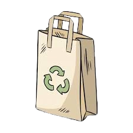
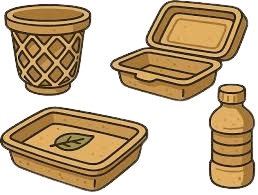

Using less plastic helps reduce waste, protect wildlife, and keep our environment clean. Simple changes like reusable bags, bottles, and containers make a big difference.
Using reusable bags instead of single-use plastic bags reduces waste and helps protect the environment.

Choosing biodegradable containers ensures waste breaks down naturally, reducing pollution and harm to wildlife.

Using reusable containers instead of disposable ones cuts plastic waste and keeps our planet cleaner.